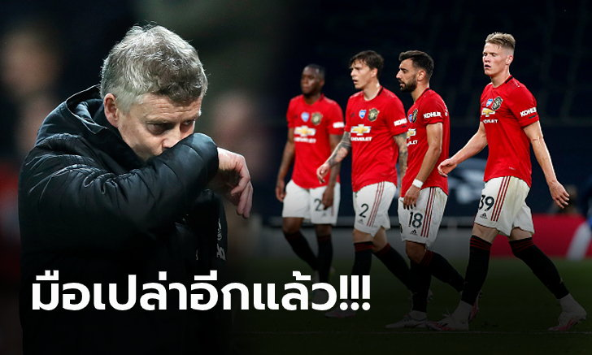
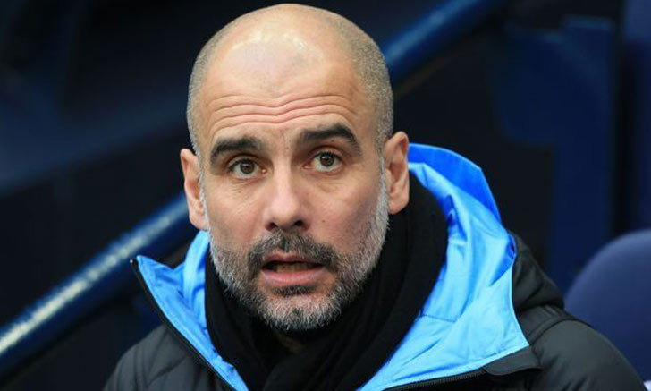
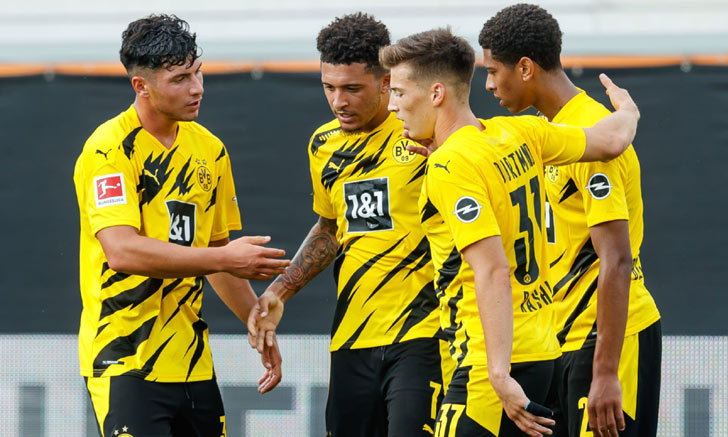

คุณภาพ! "นิโคล" ยัน "ติอาโก้" มีทักษะจ่ายบอลเหนือกว่าแข้งหงส์แดงทุกคน

สตีฟ นิโคล ตำนานแบ็คขวาเลือดหงส์แดง ยืนยันว่า ติอาโก้ อัลคันทารา เป็นมิดฟิลด์ที่มีทักษะการจ่ายบอลเหนือกว่านักเตะ ลิเวอร์พูล ชุดปัจจุบันทุกคน แต่ถ้าย้ายมาจริงก็ต้องเรียนรู้การเล่นเพรสซิ่งตามปรัชญา เยอร์เกน คล็อปป์ ให้ถ่องแท้ด้วยเช่นกัน
"ทักษะการจ่ายบอลของ ติอาโก้ อัลคันทารา สูงมากจนหาคนมาเปรียบเทียบได้ยาก แต่ปัญหาคือรูปแบบการเล่นของแผงมิดฟิลด์ ลิเวอร์พูล เน้นไล่กดดันเพื่อแย่งบอลกลับมาเล่นสวนกลับด้วยความไวปานสายฟ้าแลบ ฉะนั้นต้องใช้พลังงานเยอะกว่าปกติหลายเท่า" เจ้าตีนโต กล่าวกับ ESPN
"อย่างไรก็ตาม ด้วยความที่ไม่มีใครในทีม ลิเวอร์พูล ชุดปัจจุบันจ่ายบอลได้แม่นเท่า ติอาโก้ อีกแล้วทั้งลูกสั้น-ลูกยาว ผมจึงเชื่อว่า คล็อปป์ จะสามารถหาสูตรที่ลงตัวกับเขาได้หากมีการเซ็นสัญญาจริง"
สถิติชี้ชัด! แมนฯ ยูไนเต็ด ผลงานห่วยสุดในรอบ 31 ปี หลังไร้แชมป์ 3 ฤดูกาลติด
 "ปีศาจแดง" แมนเชสเตอร์ ยูไนเต็ด สโมสรในศึกพรีเมียร์ลีก อังกฤษ ที่แม้จะจบฤดูกาล 2019-20 ด้วยการคว้าอันดับ 3 ได้สิทธิ์เข้าร่วมแข่งขันฟุตบอล ยูฟ่า แชมเปี้ยนส์ลีก ในฤดูกาลหน้าถือว่าทำตามเป้าหมายได้สำเร็จอย่างไรก็ตามจากสถิติดังกล่าวถือว่าน่าผิดหวังเมื่อพวกเขาไม่มีถ้วยแชมป์ติดมือเป็นฤดูกาลที่ 3 ติดต่อกัน นับเป็นผลงานที่ย่ำแย่ที่สุดในประวัติสโมสรในรอบ 31 ปี หลังก่อนหน้านี้จะต้องมีแชมป์มาประดับสโมสรอย่างต่อเนื่อง
โดยครั้งสุดท้ายที่พวกเขาไร้แชมป์ยาวนานต่อเนื่องนานถึง 3 ปีติดต่อกัน ต้องย้อนไปในช่วงปี 1985-1989 ก่อนที่จะกลับมาเดินหน้าโกยแชมป์เป็นว่าเล่นในยุคที่ เซอร์ อเล็กซ์ เฟอร์กูสัน คุมทัพในช่วงปี 1989-2013
สำหรับผลงานของลูกทีม โอเล่ กุนนาร์ โซลชา ในฤดูกาลนี้ในรายการฟุตบอลถ้วย ตกรอบรอบรองชนะเลิศทุกรายการ ไม่ว่าจะเป็น ลีกคัพ, เอฟเอ คัพ และยูโรปา ลีก ซึ่งครั้งสุดท้ายที่ "ปีศาจแดง" ได้แชมป์ใบสุดท้ายต้องย้อนไปเมื่อปี 2107 ที่พวกเขาคว้าแชมป์ลีกคัพ ภายใต้การคุมทีมของ โชเซ่ มูรินโญ่ กุนซือชาวโปรตุกีส
เอเยนต์ "เป๊ป" เปิดปากหลังข่าวลือ บาร์ซา เตรียมดึงคืนถิ่น คัมป์นู
เอเยนต์ของ เป๊ป กวาร์ดิโอลา ยืนยันว่าเขายังคงจะอยู่กับ แมนเชสเตอร์ ซิตี้ ทีมดังในศึก พรีเมียร์ลีก ต่อไป โดยกล่าวถึงข่าวลือที่มีการเชื่อมโยงตนกับ บาร์เซโลนา สโมสรเก่าว่า เป็นเรื่องที่เป็นไปไม่ได้ในตอนนี้ ตามรายงานจาก goal.com
นายใหญ่ชาวคาตาลันจะคุมทีมในถิ่น เอติฮัด สเตเดี้ยม เป็นปีสุดท้ายในฤดูกาลหน้าตามที่ระบุไว้ในสัญญา หลังจากที่เพิ่งพา ซิตี้ ตกรอบ 8 ทีมสุดท้ายในศึก ยูฟา แชมเปี้ยนส์ลีก เมื่อสัปดาห์ก่อน
ในขณะเดียวกันทาง บาร์เซโลนา ทีมเก่าของเขาก็เพิ่งปลด กีเก้ เซเตียน ออกจากตำแหน่งเฮดโค้ช หลังทำผลงานได้ย่ำแย่และไร้ความสำเร็จใด ๆ ในฤดูกาลนี้ โดยมีข่าวลือว่าพวกเขาอาจจะดึง เป๊ป คืนถิ่น คัมป์นู ในช่วงซัมเมอร์
อย่างไรก็ตาม โฆเซ มาเรีย โอโรบิกจ์ เอเยนต์ของ เป๊ป ก็ได้ออกมายืนยันว่าลูกค้าของเขาจะยังอยู่กับทีม เรือใบสีฟ้า ต่อไปตามสัญญา โดยกล่าวถึงเรื่องนี้ว่า "ใช่ เป๊ป จะอยู่กับ ซิตี้ ต่อไป 100% มันเป็นไปไม่ได้ในเวลานี้"
ผู้จัดการทีมวัย 49 ปีแจ้งเกิดกับการคุม บาร์ซา โดยสามารถพาทีมคว้าแชมป์ได้ถึง 14 รายการในช่วงเวลา 4 ปีในถิ่น คัมป์นู ก่อนจะออกมารับงานคุม บาเยิร์น มิวนิค และ แมนเชสเตอร์ ซิตี้ ในปัจจุบัน
พีพีทีวี ยิงสด “เสือเหลือง” อุ่นแข้ง 2 แมตช์ต่อเนื่อง เสาร์ที่ 22 ส.ค. นี้
พีพีทีวี เอชดี ช่อง 36 จัดให้แฟนบอลได้ชมฟุตบอลสดกันต่อเนื่องแบบไม่มีพัก แม้ในช่วงปิดฤดูกาล โดยล่าสุดคว้าสิทธิ์ถ่ายทอดสดแมตช์อุ่นเครื่องรายการพิเศษของ “เสือเหลือง” โบรุสเซีย ดอร์ทมุนด์ ที่จะลุยศึก “มินิ ทัวร์นาเมนท์” ลงแข่งขันแบบ 2 แมตช์ติดต่อกัน ในวันเสาร์ที่ 22 ส.ค. นี้ นำโดย โบรุสเซีย ดอร์ทมุนด์ พบ ดุ๊ยส์บวร์ก เวลา 20.30 น. และต่อด้วย โบรุสเซีย ดอร์ทมุนด์ พบ เฟเยนูร์ด ร็อตเธอร์ดัม เวลา 21.45 น.
“เสือเหลือง” โบรุสเซีย ดอร์ทมุนด์ ปิดฤดูกาลที่แล้วด้วยอันดับรองแชมป์ และกำลังมุ่งหน้าเตรียมความพร้อมในการลงสู้ศึกฤดูกาลใหม่ ซึ่งได้เรียกนักเตะกลับมาเข้าแคมป์เพื่อฝึกซ้อมในช่วงปรีซีซั่นตั้งแต่วันที่ 3 ส.ค. ที่ผ่านมา พร้อมด้วยสองสมาชิกใหม่อย่าง “โธมัส เมอนิเย่ร์” แบ็กขวาทีมชาติเบลเยียม จาก ปารีส แซงต์-แชร์กแมง และ “จู๊ด เบลลิงแฮม” ดาวรุ่งวัย 17 ปี ที่ย้ายมาจาก เบอร์มิงแฮม ด้วยค่าตัวสูงถึง 25 ล้านยูโร
สำหรับโปรแกรมการแข่งขันแบบ “มินิ ทัวร์นาเมนต์” 2 แมตช์ ที่ทาง พีพีทีวี จะถ่ายทอดสดในครั้งนี้ จะเป็นการแข่งขันแบบต่อเนื่องในวันเดียว ซึ่งเป็นการแข่งขันแมตช์ละ 60 นาที เพื่อไม่ให้นักเตะต้องกรำศึกหนักจนเกินไป ซึ่งทัพเสือเหลือง จะประเดิมแมตช์แรกในรายการนี้ ด้วยการพบกับ ดุ๊ยส์บวร์ก ทีมอันดับ 5 จากเยอรมัน ลีกา 3 และจากนั้นก็จะลงสนามเพื่อทำศึกแมตช์ที่ 2 ต่อทันที ด้วยการพบกับ เฟเยนูร์ด ร็อตเธอร์ดัม ทีมดังจากเนเธอร์แลนด์ ซึ่งคาดกันว่า “ลูเซียง ฟาฟร์” ผู้จัดการทีมเสือเหลือง จะจัดทัพแบบผสมผู้เล่น ทั้งตัวหลัก และสำรอง ทั้ง 2 ชุด เพื่อทดสอบความฟิต รวมถึงแทคติคต่างๆ เพื่อเตรียมสู้ศึก “บุนเดสลีกา” ฤดูกาลใหม่ที่กำลังจะมาถึงนี้แน่นอน
แฟนบอลชาวไทยสามารถติดตามชมการถ่ายทอสดความมันส์สุดพิเศษครั้งนี้ เต็มอิ่มต่อเนื่อง 2 แมตช์ติด ในวันเสาร์ที่ 22 สิงหาคม นี้ เริ่มตั้งแต่แมตช์แรก ดุ๊ยส์บวร์ก พบ โบรุสเซีย ดอร์ทมุนด์ เวลา 20.30 น. และต่อด้วย โบรุสเซีย ดอร์ทมุนด์ พบ เฟเยนูร์ด ร็อตเธอร์ดัม เวลา 21.45 น. ทางหน้าจอ พีพีทีวี เอชดี ช่อง 36 ที่เดียว หรือสามารถเลือกรับชมการถ่ายทอดสดผ่านช่องทางออนไลน์ได้ทาง www.pptvhd36.com แอปพลิเคชัน PPTVHD36 และทาง facebook : PPTV HD 36